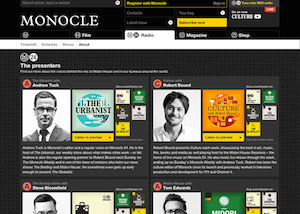
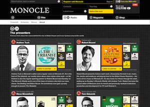
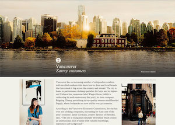
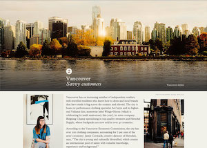
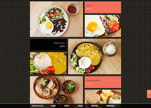
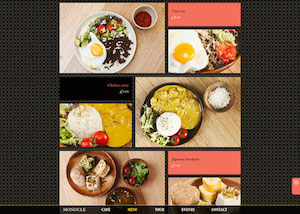
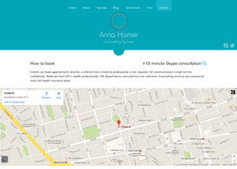
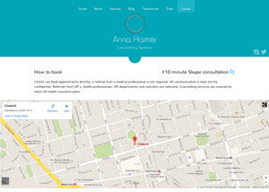
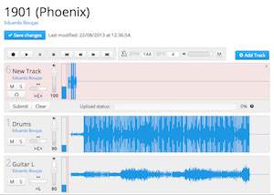
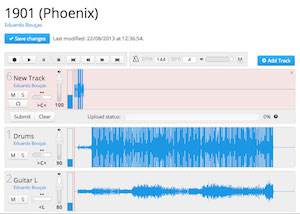

At Monocle I was responsible for maintaining the website, implementing new features, working on the integration between the website and M24 — Monocle’s online radio station — as well as designing and building a series of internal tools. Front-end typically involves HTML5, CSS3 and JavaScript (with jQuery and Ajax always around) whilst the back-end part is mainly PHP, XSLT, MySQL, MongoDB and the constant integration with the CMS.
As a collaboration between Mercedes-Benz and Monocle, this advertorial site shows the revolutionary S 500 Intelligent Drive concept car. I was the front-end developer of this fully responsive website — unfortunately, I didn’t get a car.
Monocle’s Style Directory is a collection of the sharpest products to buy, people to follow and cities to visit. This build was a great challenge, as the bold design breaks the limits of the typical layout of a website and attemps to provide the look and feel of a magazine. It is a fully responsive website.
The Monocle Café website was the first project I’ve worked on while at Monocle. I was responsible for the front-end build and for a great part of the back-end system. The website is fully responsive and adapts itself based on the device it’s being viewed on. It generated quite a buzz on social media.
I worked as a front-end developer on this advertorial site that marks the collaboration between Hyundai and Monocle, where the South Korean manufacturer presents its new concept of ‘Modern Premium’. The website was built with HTML5 and CSS3 only and is fully responsive.
Lazy Boy is my musical alter ego, under which I released my first record as a singer-songwriter in late 2012. The website was my first experience with a drawing tablet and my first serious incursion into Photoshop land. It uses PHP to get all its content from a Tumblr account.
Recording Cloud is a web-based collaborative audio recording platform for musicians. Sort of Pro Tools, DropBox and GitHub put together. Having started as my MSc project dissertation, it makes use of cutting-edge web technologies, such as HTML5 and JavaScript libraries like the Stream API and the Web Audio API. Since I believe it has the potential to have a life of its own out of the academic context, I’ve been investing a lot of my free time in improving this platform, hoping to make it a reality that helps to foster the exchange between musicians from all over the world.
 



 


 


 



 
